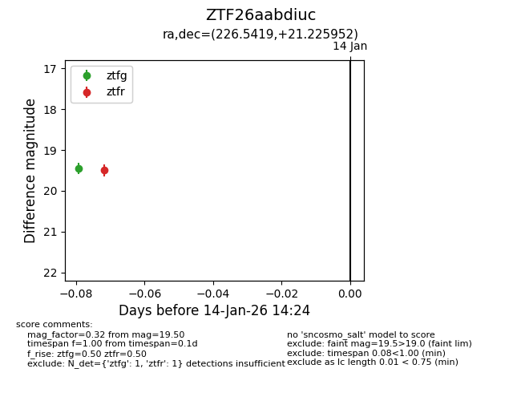
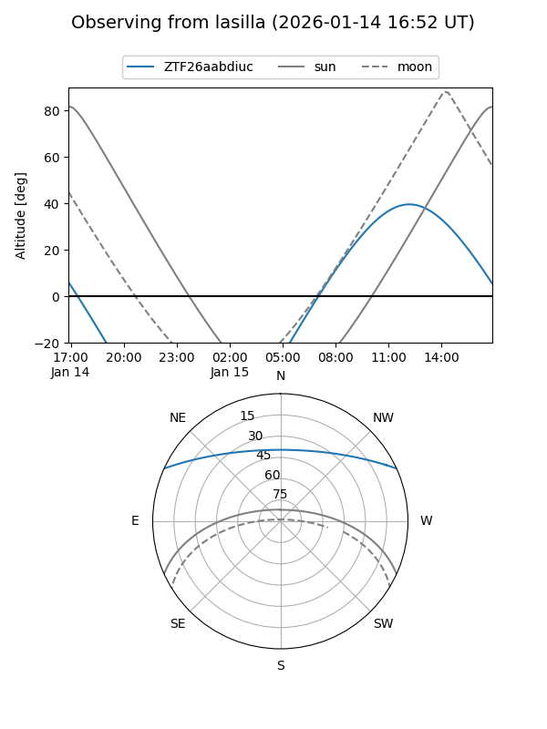
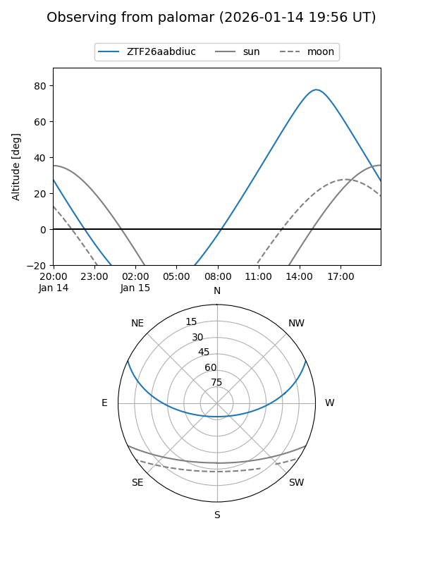

ZTF26aabdiuc
Target ZTF26aabdiuc at 2026-01-14 14:25
Aliases and brokers:
FINK: link
Lasair: link
ALeRCE: link
alt names
ZTF26aabdiuc (ztf,fink_ztf)
Coordinates:
equatorial (ra, dec) = 226.5419,+21.22595
equatorial (HMS+DMS) = 15:06:10.05,+21:13:33.43
galactic (l, b) = (29.4476,+58.80697)
Flags:
Photometry:
last ztfg=19.45, ztfr=19.50
1 ztfg, 1 ztfr detections
Lightcurve

Visibility


Additional plots